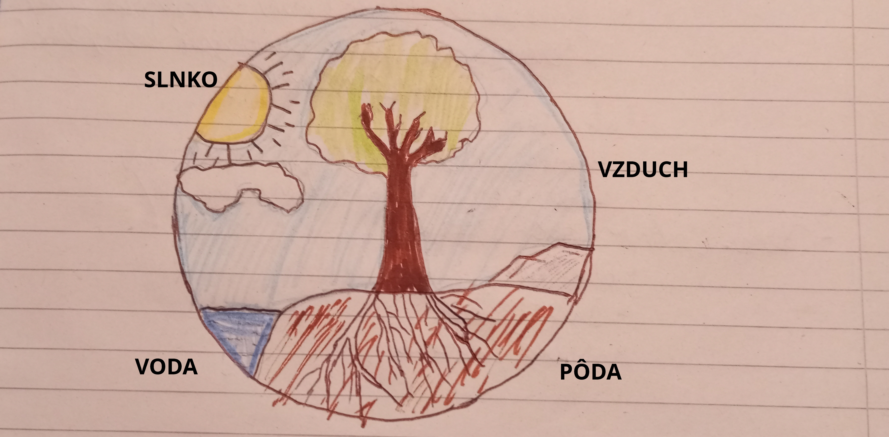

Biológia - poznámky
Neživá príroda a jej poznávanie
- životné prostredie - prostredie pre život organizmov (vírusy, baktérie, rastliny, živočíchy, luďia)
- Živá príroda
- Neživá príroda
- neživá príroda:
- slnko:
- svetlo
- teplo
- energia pre fotosyntézu
- voda:
- nevyhnutná pre život
- súčasť tiel organizmov
- nevyhnutná pre fotosyntézu
- životné prostredie
- vzduch:
- kyslík - dýchanie
- CO2 - fotosyntéza
- pôda:
- živiny pre rastliny
- minerály + horniny
- životné prostredie
- živá príroda
- všetky živé organizmy
- ovplyvňuje neživú prírodu
- korene rastlín ktoré rastú na skalách
- rozrušujú povrch (zvetrávanie) vznik pôdy
- stromovité plavúne, prasličky a paprade odumreli, zuhoľnateli
- koraly, ulitníky a lastúrniky odumretím
- človek
- minulosť
- minerály + horniny - nože, sekery, oštepy, nádoby
- pôda - poľnohospodárstvo
- súčastnosť
- nerastné suroviny
- rudné suroviny = železná ruda, olovená ruda
- nerudné suroviny = štrk, piesok - staveníctvo, kamenná soľ

Zem a jej stavba
- Smerom do vnútra:
- Zemská kôra
- najvrchnejšia časť
- delí sa na:
- pevninská kôra: podklad kontinentov
- priemerná hrúbka = 35km
- pod pohoriami = 70km
- pod slovenskom = 30-40km
- čiastočne zaliata morskou vodou
- oceánska kôra: podklad kontinentov
- zaliata oceánom a morom
- priemerná hrúbka = 7km
- Zemský plášť
- od 40 do 2900km
- delí sa na:
- vrchný plášť
- prechodová zóna
- spodný plášť
- Zemské jadro
- od 2900 do 6378km
- 6000 °C
- tvorí ho železo a nikel
- vysoká hustota
- Litosféra
- tvorí ju zemská kôra a najvrchnejšia časť zemského plášťa
- hrúbka = 100 - 150km
- skladá sa z blokov hornín - litosferické dosky(je rozlámaná; napr. Euroázijská doska, Africká doska, Americká doska...)
- ak idú
- proti sebe - pohoria, zemetrasenia
- od seba - prepadliny, trhliny
Minerály a horniny - stavebné jednotky zeme
- zemská kôra = minerály + horniny
- minerál (nerast) - anorganická rovnorodá prírodnina ktorá je vo všetkých častiach rovnaká, má rovnaké zloženie, stavbu a vlastnosti
- Najrozšírenejšie minerály:
- Živec
- tvorí 50% hmoty zemskej kôry
- môže byť ružovkastý, sivobiely
- Kremeň
- tvorí viac ako 10% hmoty zemskej kôry
- je sivobiely, velmi tvrdý
- tvorí odrody:
- Krištáľ - bezfarebný priezračný kremeň
- Ametyst - fialový
- Síra - žltkastá horľavá
- Pyrit - kryštalizuje v tvare kocky, zlatožltá farba
- hornina - anorganická rôznorodá prírodnina, nemá rovnaké zloženie a vlastnosti, je to zmes látok
- Vápenec = zložený z jedného minerálu - kalcit
- Žula = zložená z troch minerálov - kremeň, živec, sľuda
- vznik hornín:
- vyvreté horniny:
- vznikajú v hĺbkach zemskej kôry (žula)
- na povrchu (andezit)
- usadené horniny - vznikajú usadením rôzneho materiálu - štrk = zlepenec; piesok = pieskovec
- premenené horniny - vznikajú v hlbinách zeme pôsobením vysokej teploty + tlaku (rula)
Vznik stavba a vlastnosti minerálov
- Vznik:
- kryštalyzácia taveniny magmy v hĺbkach zeme (kremeň)
- kryŠtalizácia taveniny lávy na Zemskom povrchu (živec)
- odparovaním vodných roztokov (kamenná soľ)
- väčšina minerálov vytvára kryštály
- Kryštál - pevné teleso s pravidelnou stavbou ohraničené plochami a hranami (síra, kremeň, kamenná soľ, ametyst)✕ Krištáľ - odroda kremeňa
SPÄŤ